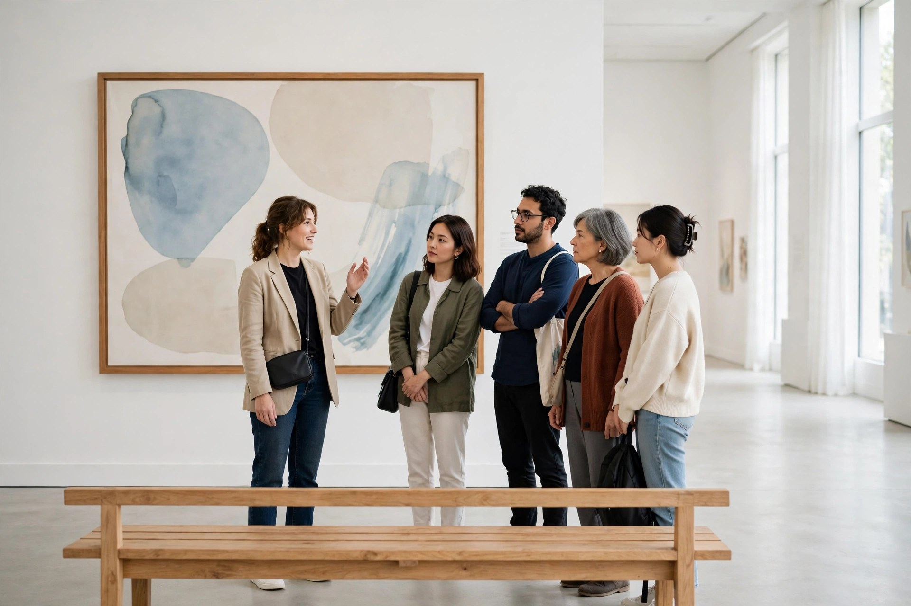

Museum Gallery Talk Survival: Sixty Minutes, Eight Stops, and the Thirty-Minute Dip

The fade that arrives halfway through a gallery talk is not a character flaw, and it is not boredom with the art. It has a name, museum fatigue, and a paper trail: the phenomenon was first described in 1916 by Benjamin Ives Gilman in The Scientific Monthly, and researchers have been timing it ever since. Visitors are not failing the museum. The museum visit, talk included, spends attention on a schedule that research mapped a long time ago. A tired visitor who knows the schedule can spend along with it, on purpose.
The dip is timed, which makes it plannable
At the Florida Museum of Natural History in 1985, Falk, Koran, Dierking and Dreblow observed visitors holding high interest in anything in the museum for about 30 minutes, and then a decrease. Beverly Serrell's research in 1997 to 1998 found people becoming apathetic towards the museum in less than 20 minutes. Arthur Melton had already observed the companion effect decades earlier: interest in displays decreased as the number of displays increased.
Stephen Bitgood's 2009 review in Visitor Studies lists the usual suspects behind the fade: exhaustion, satiation from repeated exposure to similar exhibits, information overload, object competition, and a limited attention capacity that every new stop draws down. None of those is cured by trying harder at stop six. They are managed, the way visitors already manage them on their own: taking breaks, skipping long texts, and leaving before exhaustion arrives. A gallery talk removes some of those levers, because the group sets the pace. It leaves others untouched, and those are the ones this guide uses.
The shape of the talk you are standing in
Docents are trained to a shape, and knowing it turns an endless drift of rooms into a countable series of stops. Public tours run 60 minutes, and may run longer only if the guide and the audience agree. A healthy amount of works to cover is 6 to 8. More than 10 artworks on an hour-long tour is too many, and guides are told so. The point of the talk is not to show every piece on view. It is to begin a conversation between the viewers and a few carefully chosen pieces, and visitors can return another day to see more. Tours also stay on one floor where possible, which means the walking is shorter and the standing is the real load.
| Format | Length | Shape | For a tired visitor |
|---|---|---|---|
| Mini tour | 30 minutes | A short guided look, listed at the Art Gallery of Ontario at 30 minutes | The kindest full talk. It ends near where the research dip begins. |
| Public or highlight tour | 60 minutes | About 6 to 8 works with a trained guide; highlight tours at the AGO are listed at 1 hour | The standard test. Plan for the dip at the halfway stop, not at the end. |
| Longer guided visit | Around 2 hours (a guided Musée d'Orsay visit, for example) | A fuller route through a large collection, with time added for security and a short gallery pause | A different sport entirely. Choose it rested, or choose the mini instead. |
| Self-guided fallback | Yours to set | A free map from the front desk and your own route | Always available. Gallery Guides stationed around the building will still answer questions about a painting or sculpture. |
One more number recalibrates expectations kindly: studies of visitors put the average time in front of an artwork at under 30 seconds. A talk that holds a group at one painting for several minutes is already asking, and giving, far more attention than the average visit ever does.
Working the stops: a procedure for the hour
- Count the stops, not the minutes. At the first painting, start a quiet tally. Six to eight stops is the healthy shape, so stop four is halfway, whatever the clock claims. A known halfway point is easier to reach than an unknown end.
- Stand where the next move is short. Guides keep the mobility of guests in mind, and groups gather, listen, and walk on. The edge of the group nearest the route onward saves steps at every stop, and steps are the currency that runs out first.
- Take the bench whenever a stop offers one. Museums place seating in galleries partly as a defence against this exact fatigue, and cafes and shops exist in the building as break space too. Sitting for one stop's talk is not surrender. It is the museum's own equipment, used as designed.
- Ask one real question in the second half. Guides are trained to welcome questions and opinions, and a question converts listening, which fades, into conversation, which wakes a person up. Variation helps on the research side too: varied objects and interactive moments are shown to soften satiation.
- Stay two feet back and keep hands off. Tour guidance puts visitors two feet from all works, and general gallery practice is about an arm's length from anything not behind glass. Rules are oddly restful: they give a tired brain one simple job.
What success looks like: at the final stop you can say what the last work was, one thing the guide said about it, and whether you are staying to look longer or leaving while the visit is still a good memory.
Bench, question, or bow out
- Bench, when the body is the problem. Slow walking and standing on hard floors, plus constant reading, wear visitors out, and a typical visit expectation is to tire in about 90 minutes. If the legs went before the attention did, sit through a stop and rejoin standing at the next one.
- Question, when the mind is the problem. If the works are blurring into one another, that is satiation, the known effect of similar objects in a row. A question, a closer look at one detail, or a deliberate comparison with the previous stop breaks the row.
- Bow out, kindly, when both have gone. Leaving a talk is allowed, and the research on self-paced visits says visitors who regulate their own path reach satiation later and report greater satisfaction. Thank the guide at a stop boundary, not mid-sentence, take a free map, and finish with three works at your own pace. A 45-minute highlights route in general visiting guidance covers about ten objects with an expert's eye; your shorter self-guided finish is in respectable company.
The last stop earns a small ceremony. Guides are trained to end on a carefully chosen piece, and the group that stays to the end gets the talk as it was designed to land. Be awake for that one if you can. And if the day truly wins, remember the standing invitation built into every tour: visitors can return to see more work at a later time. The paintings are patient. They have waited this long.
, Rex Bennett, Entertainment Writer